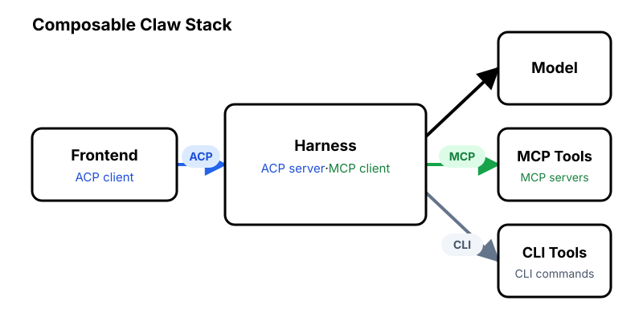

For hosting a personal agent, or claw, there is the seminal OpenClaw and its monolithic cousins, such as Hermes and IronClaw. At the opposite end of the architectural spectrum are the avant-garde, build-from-nothing projects such as NanoClaw and Seedbot.
Both approaches have advantages, but I wanted the best of both: well-tested, engineered components with the flexibility to choose or build the features I need.
Composable claws are built from modular components connected by established protocols. A client connects to a harness using ACP, while the harness connects to MCP tools through MCP and CLI tools directly. You choose the components that make up your stack:

The harness can be wrapped in a container for sandboxing and network isolation.
Here is my stack:
To run multiple profiles, copy the same stack and update the instructions and tools for each one.
Think it is too much to configure? We have a tool for that!